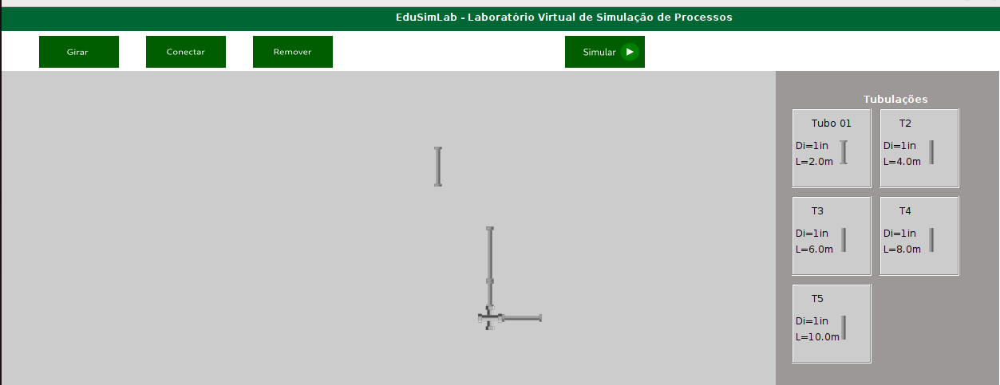

Sobre o EduSimLab
Bem-vindo ao EduSimLab, o Laboratório Virtual de Simulação de Processos criado para auxiliar na forma como aprendemos sobre processos industriais nos cursos técnicos e tecnológicos. Nossa missão é proporcionar uma experiência educacional agradável, incorporando atividades simuladas como um recurso metodológico essencial.
O EduSimLab é mais do que apenas um software; é uma plataforma dinâmica que visa cativar os alunos, levando-os a mergulhar no universo prático dos processos industriais. Desenvolvido utilizando a robusta linguagem de programação Java, garantimos não apenas funcionalidade, mas também portabilidade para ser executado em qualquer ambiente com suporte à tecnologia.
